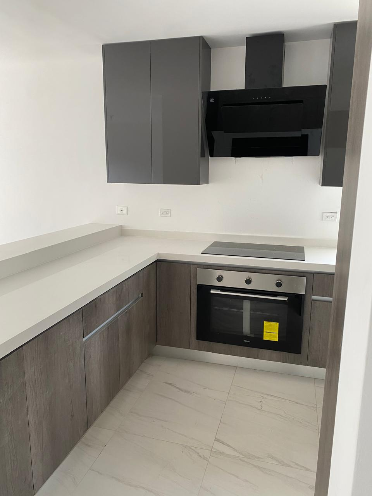
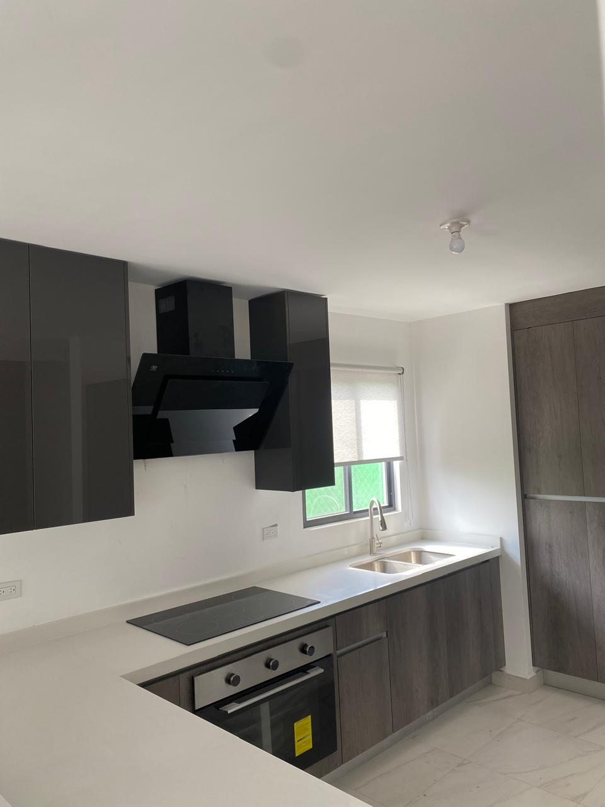
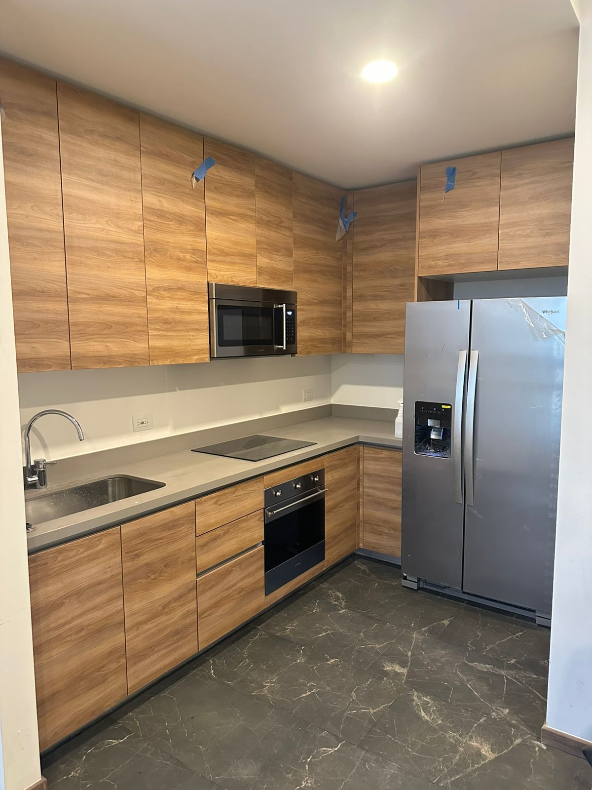
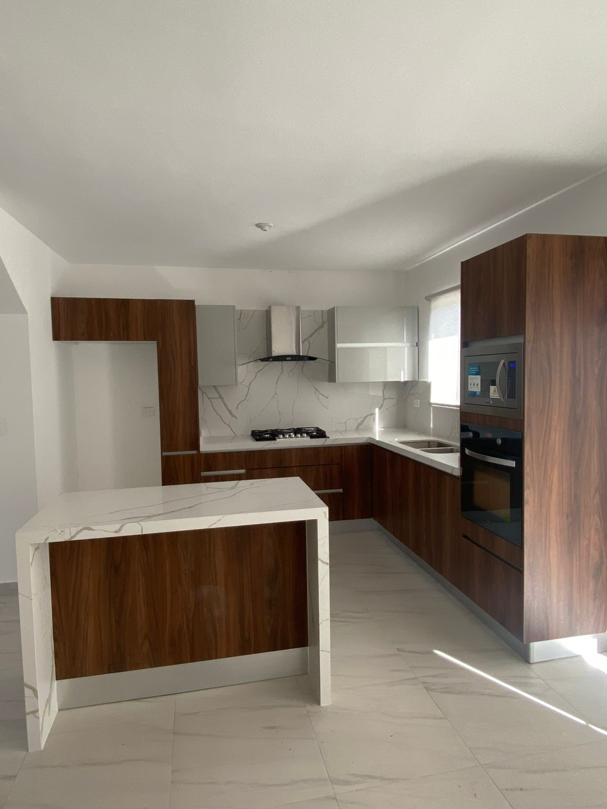

Cocinas modernas
Líneas limpias y acabados modernos que hacen de tu cocina el centro de la casa.

Diseño funcional y personalizado para aprovechar cada espacio.
Explora algunas posibilidades. Te asesoramos para seleccionar medidas, colores, texturas, materiales y acabados de acuerdo con tu proyecto.
Líneas limpias y acabados modernos que hacen de tu cocina el centro de la casa.
Diseños sencillos y ordenados, con pocos elementos y mucha funcionalidad.

En L, en U, con isla o lineal: adaptamos la distribución a tu espacio y a tu rutina.

Combina colores, texturas y cubiertas para lograr el estilo que buscas.

Cajones, alacenas y organizadores pensados para aprovechar cada centímetro.

Si tienes una idea distinta, la diseñamos contigo desde cero.






En Lux Interiores diseñamos, fabricamos e instalamos cocinas integrales personalizadas para hogares, departamentos y proyectos de remodelación en Monterrey y toda el área metropolitana.
Contamos con taller propio para la fabricación de muebles de cocina, lo que nos permite desarrollar proyectos totalmente a medida y garantizar altos estándares de calidad en cada etapa del proceso.
Trabajamos con materiales como Melamina, MDF, Mate antihuella y acabados de alto brillo, adaptándonos al estilo, espacio y presupuesto de cada cliente.
Complementamos nuestros proyectos con cubiertas de Granito, Cuarzo y Formica para lograr cocinas resistentes, funcionales y visualmente atractivas.
Cuidamos cada etapa del proceso para lograr calidad y precisión en los detalles.
Cada cocina se diseña a la medida de tu espacio, tu estilo y tu forma de cocinar.
Melamina, MDF, Mate antihuella y acabados de alto brillo para cada estilo y presupuesto.
Superficies resistentes y funcionales con un acabado elegante.
Realizada por nuestro equipo, con ajuste exacto en cada rincón.
Te acompañamos desde la asesoría y la toma de medidas hasta la instalación.
Atendemos Monterrey, San Pedro Garza García, Guadalupe, Apodaca, Escobedo, Santa Catarina y San Nicolás de los Garza.
¿Necesitas más información? Escríbenos por WhatsApp y con gusto te asesoramos.
Sí, todos nuestros proyectos son fabricados en nuestro taller propio para garantizar calidad y personalización.
Utilizamos Melamina, MDF, Mate antihuella y acabados de alto brillo. Te asesoramos para elegir el material que mejor se adapte a tu estilo, espacio y presupuesto.
Trabajamos con cubiertas de Granito, Cuarzo y Formica.
Sí, realizamos proyectos en Monterrey, San Pedro Garza García, Guadalupe, Apodaca, Escobedo, Santa Catarina y San Nicolás de los Garza.
Sí, diseñamos cada cocina a la medida de tu espacio. Te asesoramos en la toma de medidas, la distribución (en L, en U, con isla o lineal), los colores, texturas, materiales y acabados.
Cuéntanos cómo es tu espacio y cómo cocinas. Te asesoramos por WhatsApp para definir medidas, materiales y acabados de tu cocina integral en Monterrey.
¿Ya sabes qué distribución quieres? Elige una:
Horario de atención: 9:00 a.m. a 6:00 p.m.